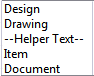

Enter descriptive information into Item type lists
-
Start the Teamcenter rich client and log in with database administrator privileges.
-
Choose Edit→Options→Search.
-
In the Search by Keywords text box, type SEEC_Item_Type.
-
Select SEEC_Item_Type_Sort.
-
Set the item type list order to display in the order in which the tiem types are entered in the SEEC_ItemType preference by clicking Edit, and setting the preference value to 0.
-
Click Save to save the edited value.
-
In the Search by Keywords text box, type SEEC_ItemTypeList.
-
Select the item type that you want to contain descriptive information.
Example: SEEC_ItemTypeList_SE Part
-
Click Edit and insert a line of descriptive text by typing /roRow=<text>.
Example:/roRow=--Helper Text--
The text that follows the = is inserted into the list as descriptive information.
-
Click + to add the new entry into the list.
-
Select the line of descriptive information you defined, and use the up and down arrows to position the entry in the proper location in the list.
-
Click Save.
-
Click Close to exit the Options dialog box.
-
Start Solid Edge and save a part document to verify the results.
